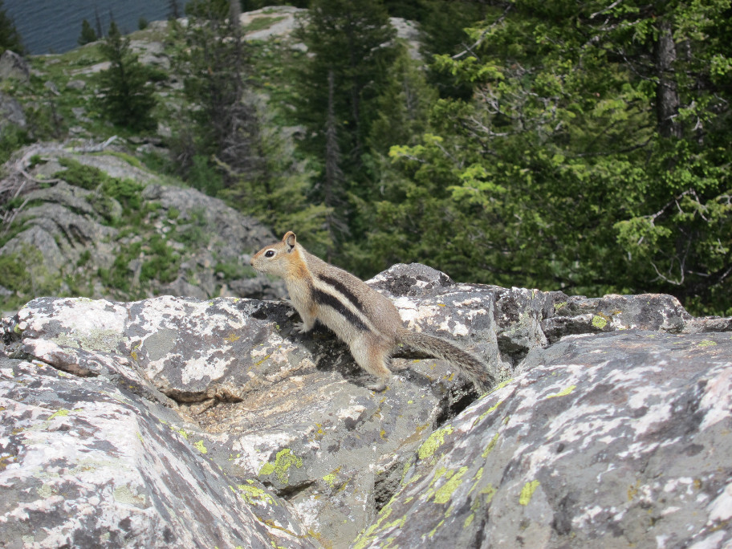

Slideshow customized
- 


-
At Inspiration Point the golden-mantled ground squirrel and yellow-bellied marmot show themselves to people on the rocks. This is without food to tempt them. You should not feed them. These particular animals are habituated to people probably because so many people visit. By accident or on purpose a few people probably do feed the animals. Still these animals keep an eye on people and can quickly hide in the rocks or get aggressive.
U.S. National Park ServiceGrand Teton National Parkpublished information:
{kind=link}
{kind=link}
{kind=link}
This slideshow uses jQuery bxSlider[1]. Press the left and right side of the image (slide). Watch the cursor change as you move it on and off either side of the image. The cursor change shows where the previous and next click are active. Press the Enter key to repeat the previous or next slide action again.
If the slideshow does not fit vertically on the screen resize the browser window narrower to make the slideshow fit vertically.
Compare this page with Slideshow. In particular compare the large and unmarked previous and next click areas on this page with the left and right arrows visible on the image (slide) of the Slideshow page. These are controlled by this custom page's use of ../../css/jquery.bxslider_customized.css and the Slideshow page's use of the standard file ../../css/jquery.bxslider.css.
The fade from one slide to the next is also different. If you prefer the gradual fade of Slideshow and want that also on this Slideshow customized page you can remove the "speed: 1," parameter from the bxSlider initialization. This initialization is done in the source of this page's topic.html file. View page source to see it.
References
- ^ See bxSlider 4.2.5 at https://github.com/stevenwanderski/bxslider-4 and http://bxslider.com/ retrieved on 2016 07 04.